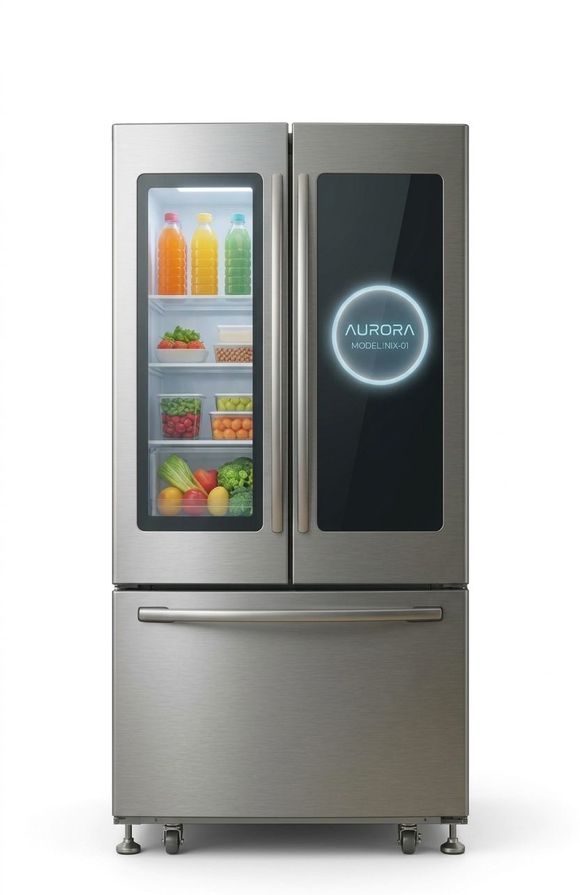
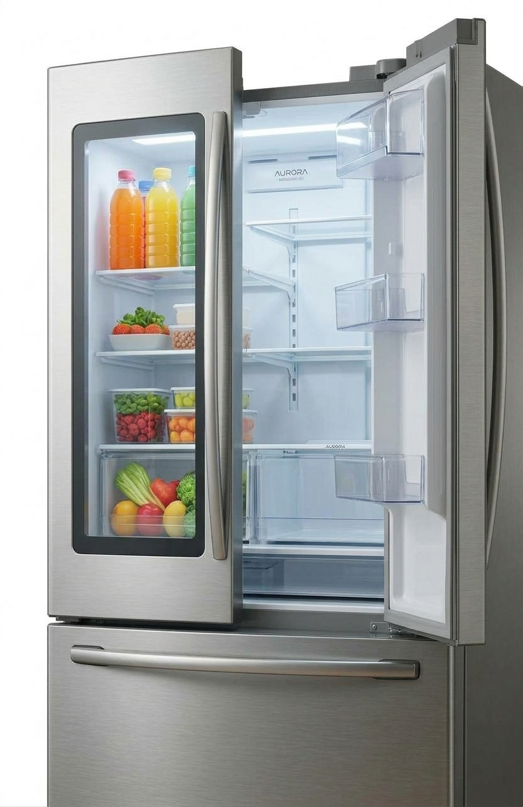
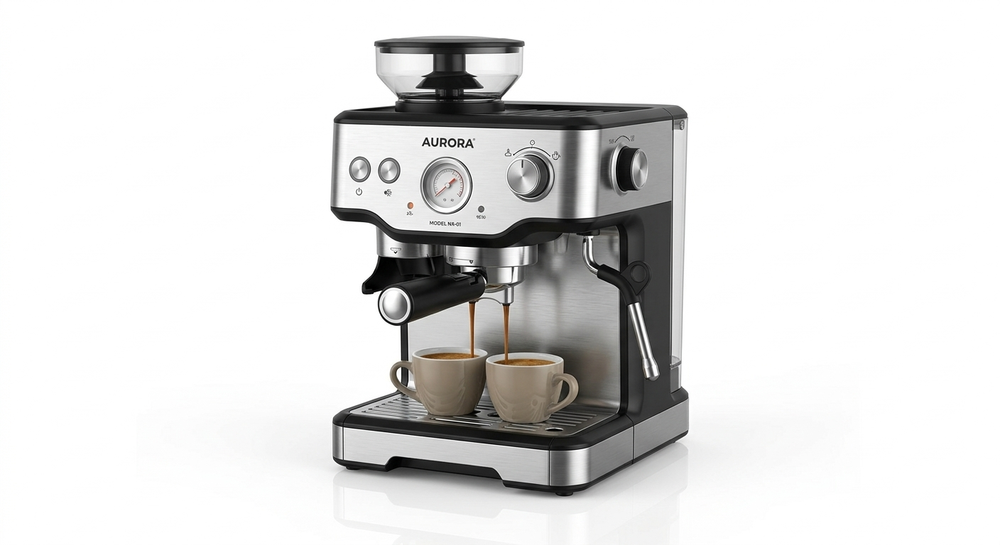
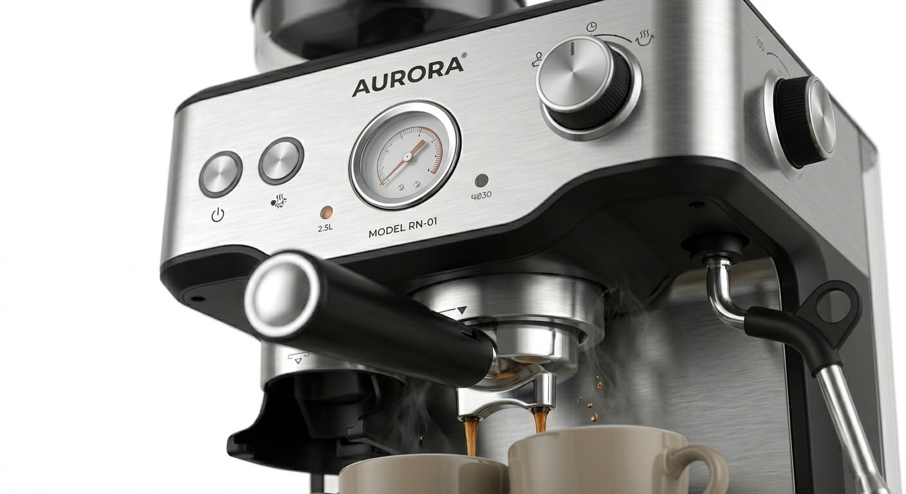
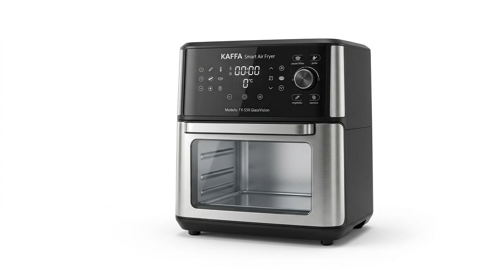
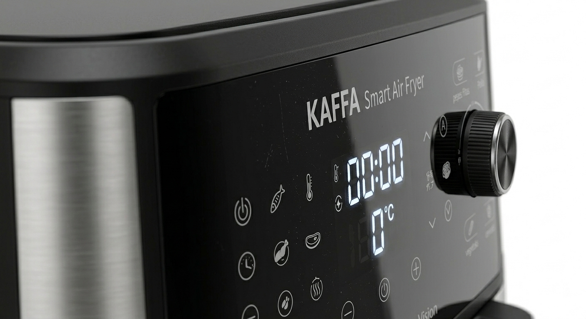
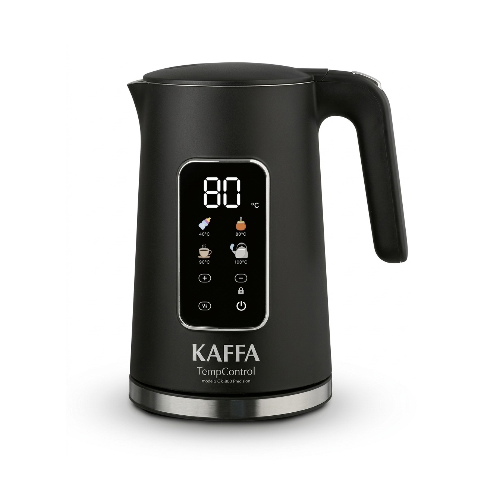
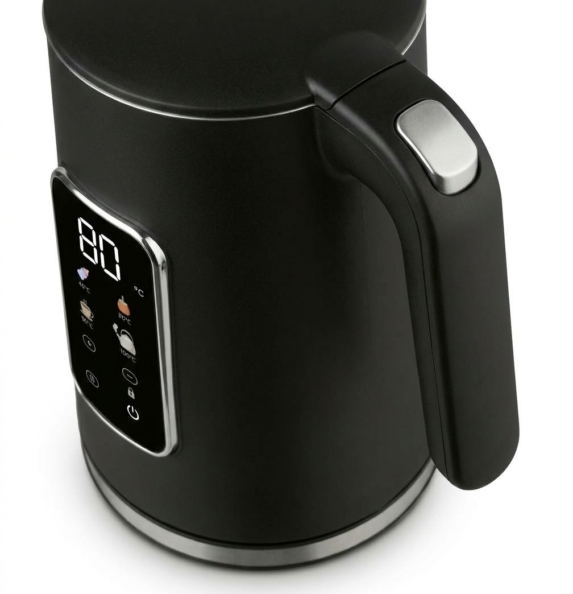

En ElectroHogar, nos dedicamos a ofrecer electrodomésticos que combinan calidad, tecnología y
practicidad. Nuestro objetivo es ayudarte a encontrar todo lo que necesitás para hacer de tu hogar un
lugar más cómodo y funcional, brindándote una experiencia de compra simple y confiable.
Productos destacados


Heladera Aurora NIX-01 340Lts
Heladera con freezer de 340 litros, diseñada en un elegante color gris que combina estilo y
funcionalidad. Cuenta con una práctica pantalla digital para un control más cómodo de la temperatura
y un sistema de refrigeración eficiente que ayuda a mantener tus alimentos frescos por más tiempo.
Su diseño moderno es ideal para darle un toque sofisticado a tu cocina.
$ 1.195.999,00


Cafetera Espresso Aurora RN-01
Disfrutá un café con aroma intenso gracias a esta cafetera espresso de acero
inoxidable. Cuenta con una bomba de presión de 20 bares, molinillo integrado con 15 niveles de
molienda y manómetro de precisión. Además, incorpora un vaporizador de leche y control digital de
temperatura, ideal para preparar espressos, capuchinos y lattes en casa.
$235.500,00


Freidora de Aire KAFFA FX-550 GlassVision
Freidora de aire digital de 5,5 litros. Su diseño elegante en acero inoxidable incorpora una ventana
panorámica para supervisar la cocción, un panel táctil con 8 programas automáticos y tecnología de
circulación de aire caliente de 360°. Con temperatura regulable de 80 °C a 200 °C y apagado
automático, es ideal para cocinar de forma práctica y sencilla todos los días.
$169.799,00


Pava Eléctrica KAFFA GK-800 Precision
Pava eléctrica de diseño elegante en acero inoxidable negro mate, equipada con pantalla digital LED y
controles táctiles. Permite seleccionar temperaturas de 40 °C a 100 °C, ideales para preparar mate,
café, té e infusiones. Además, cuenta con función para mantener el agua caliente y bloqueo de
seguridad
$43.249,00
Reseñas
Camilo R.
“La ventana transparente de la freidora lo cambia todo, no tenés que andar abriendo la canasta cada 5
minutos para ver
cómo van las papas. Además entra súper bien en la mesada.”
Sofía L.
“Un viaje de ida para tomar mate. Con el botón directo de 80 °C sabés que la yerba no se quema nunca
más, y la función de mantener caliente sirve un montón para no tener que estar re-calentando a cada
rato. El panel táctil responde bárbaro y el acabado negro mate queda muy elegante en la cocina.”
Renata S.
“La compré buscando una pava con control digital preciso para café de prensa y tés de hebras.
Mantiene la temperatura exacta que le marcás y la pantalla integrada en la pared de la pava se ve
super moderna.”
Mariana G.
“La cafetera está muy buena, hace un café rico y es bastante fácil de usar. La tengo hace un tiempo y
hasta ahora funciona perfecto. Buena compra, la recomiendo.”
Justo M.
“Cumple con lo necesario y tiene buena capacidad. Me costó un poco acomodar algunas botellas grandes
en la puerta, pero funciona correctamente.”
Nicolas T.
“Muy buena cafetera, el café sale con un aroma y sabor excelentes. Al principio me llevó un tiempo
aprender a usar el vaporizador de leche, pero después de practicar un poco logré preparar capuchinos
muy ricos. Estoy muy conforme con la compra.”